全部教學
iPad 發燙，正常嗎？
多數時候是正常的——判斷關鍵不是「幾度」，是「什麼時候燙」。附 Apple 官方逐字列出的六種正常發熱情境、二手機到手頭 72 小時觀察法，以及四條該停用送檢的紅線。
通用剪貼板沒反應？
它不是 iCloud 同步，而是掛在「接力」底下的近距離功能。七個條件要同時成立才會動，少一個就安靜失敗、完全不報錯——一張表逐項打勾，順便釐清二手機最常被冤枉的那個誤判。
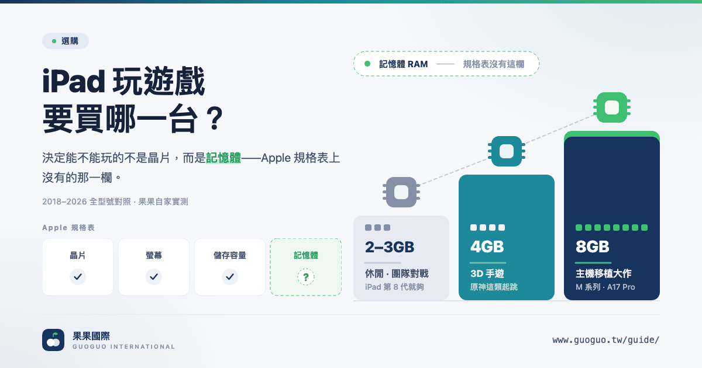
iPad 玩遊戲要買哪一台？
決定「能不能玩」的不是晶片，是記憶體——而那正是 Apple 規格表上沒有的一欄。休閒與團隊對戰類 iPad 第 8 代就夠；原神這種 3D 手遊要 4GB 記憶體起跳；主機移植大作只有 M 系列或 A17 Pro 裝得起來。附 2018–2026 全型號對照與自家實測。
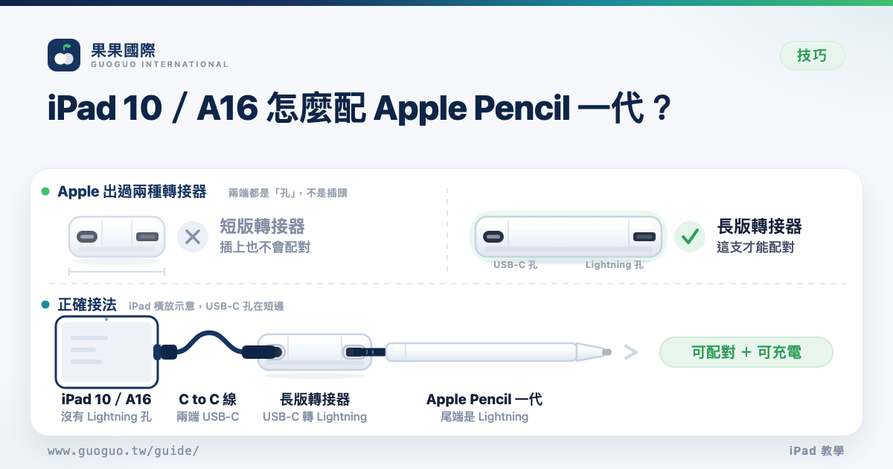
iPad 10／A16 怎麼配 Apple Pencil 一代？
iPad 10 與 iPad (A16) 沒有 Lightning 孔，一代筆不能直接插。要用 USB-C 對 Apple Pencil 轉接器＋C to C 線，而 Apple 出過兩種轉接器，只有長的那支能配對。
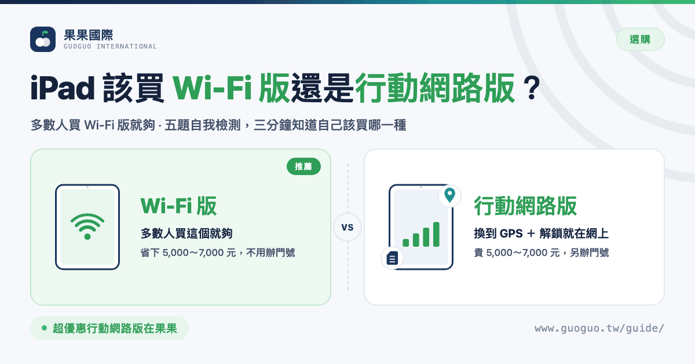
iPad 該買 Wi-Fi 版還是行動網路版？
多數人買 Wi-Fi 版就夠。行動網路版新機要多 5,000～7,000 元，還得辦一個獨立門號；它換到的是 GPS 與「解鎖就在網上」。五題自我檢測，三分鐘知道自己該買哪種。
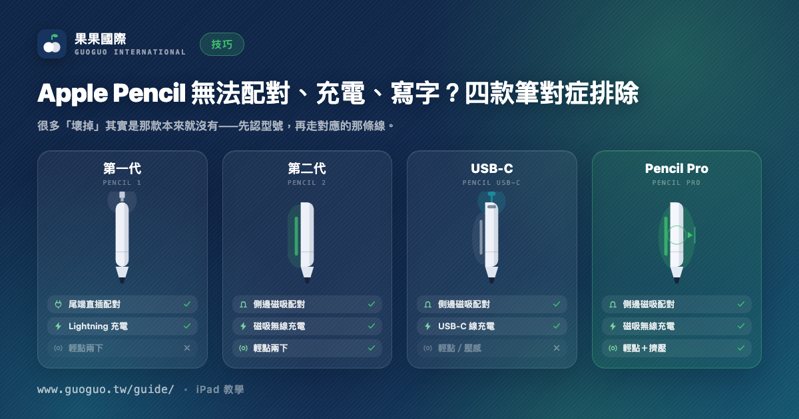
Apple Pencil 用不了？四款筆對症排除
連不上、充不了電、寫不出字、輕點兩下沒作用？四款 Apple Pencil 的接法與功能都不一樣，很多「壞掉」其實是那款本來就沒有。先認型號，再走對應的那條線。
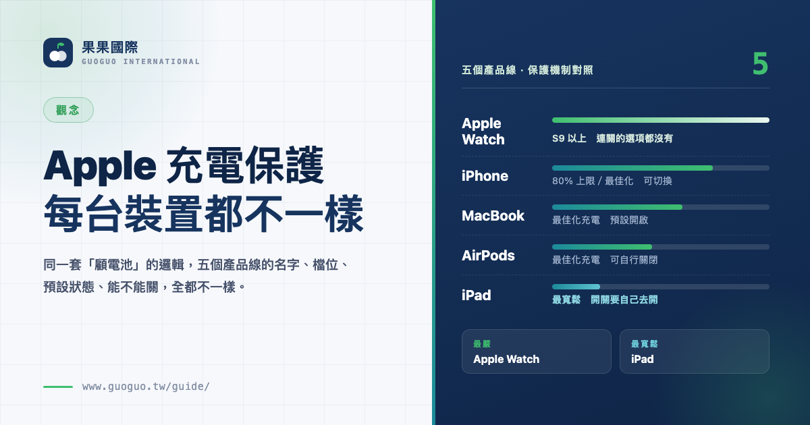
Apple 充電保護，每台裝置都不一樣
五個產品線全都有電池保護，但名字、檔位、預設狀態、能不能關全都不同。管最嚴的是 Apple Watch——Series 9 以上連關的選項都沒有；最寬鬆的反而是 iPad，那個開關要自己去開。
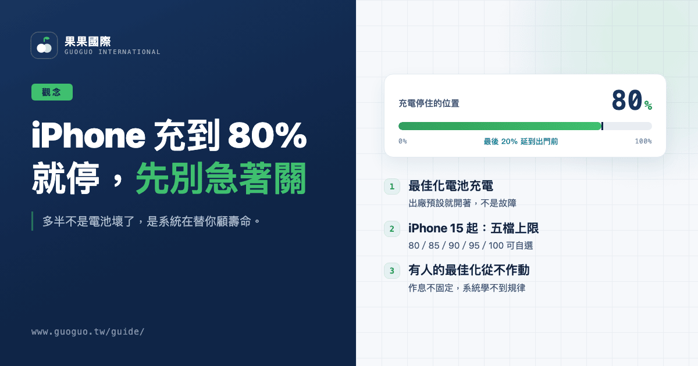
iPhone 充到 80% 就停，先別急著關
iPhone 充到 80% 就停通常不是故障——出廠就開著的「最佳化電池充電」會把最後 20% 延到你出門前。iPhone 15 起另有五檔上限。教你分辨是哪一種，以及為什麼有些人的最佳化從來不作動。
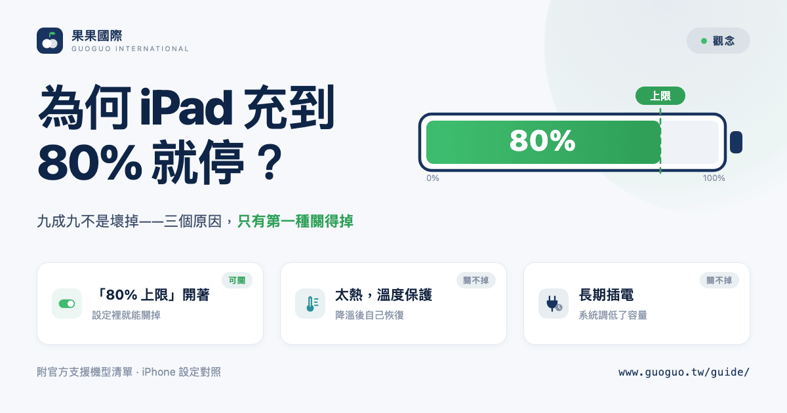
為何 iPad 充到 80% 就停？
九成九不是壞掉。可能是「80% 的上限」開著、可能是太熱觸發溫度保護、也可能是長期插電讓系統調低了容量——只有第一種關得掉。附官方支援機型清單與 iPhone 設定對照。
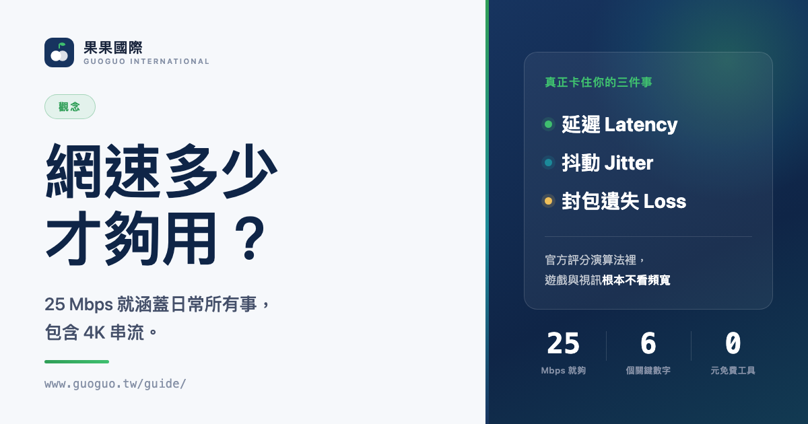
網速多少才夠用？
下載 25 Mbps 就涵蓋日常所有事，包含 4K。真正讓你卡的多半是延遲、抖動、封包遺失——官方評分演算法裡，遊戲和視訊根本不看頻寬。教你用一個免費工具量出六個數字，找出問題在哪。
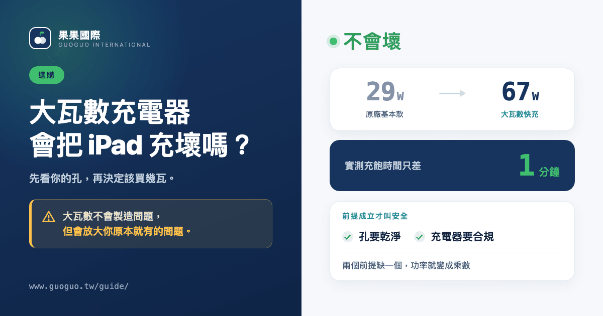
大瓦數充電器會把 iPad 充壞嗎？
不會壞——但實測從 29W 換到 67W，充飽時間只差 1 分鐘。先看你的孔，再決定該買幾瓦。
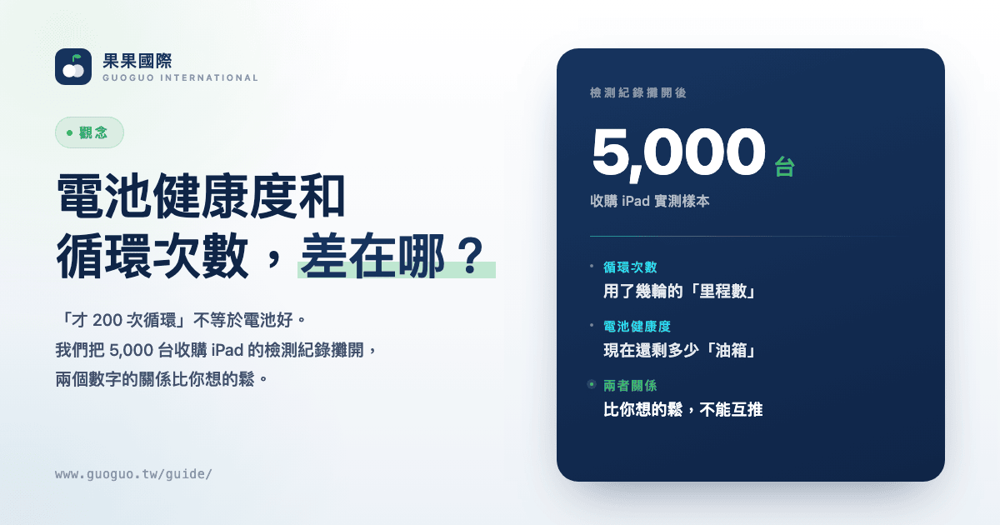
電池健康度和循環次數，差在哪？
「才 200 次循環」不等於電池好。我們把 5,000 台收購 iPad 的檢測紀錄攤開，兩個數字的關係比你想的鬆。
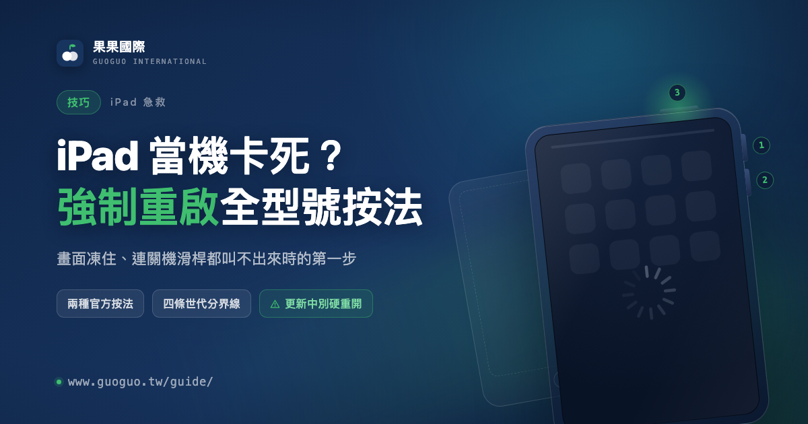
iPad 當機卡死？強制重啟全型號按法
畫面凍住、關機滑桿也叫不出來時，強制重啟不需要畫面有反應。但先確認沒有進度列，更新中硬重開會出事。按法只分兩種，關鍵是實體圓鈕不是 Touch ID。
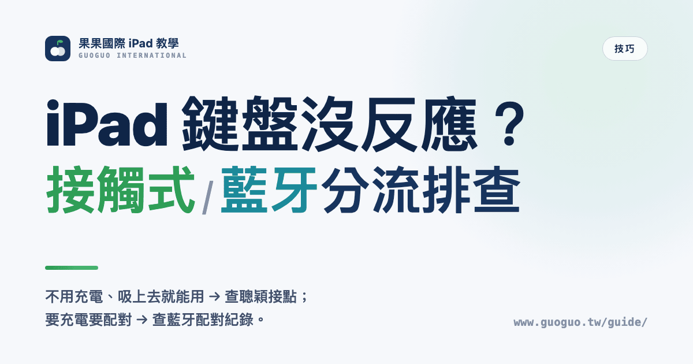
iPad 鍵盤沒反應？接觸式與藍牙分流排查
鍵盤突然打不出字，多半不是壞了。吸上去就能用的走聰穎接點，要充電配對的才是藍牙——兩條路查法完全不同。附官方四步排錯與六種「假故障」對照。
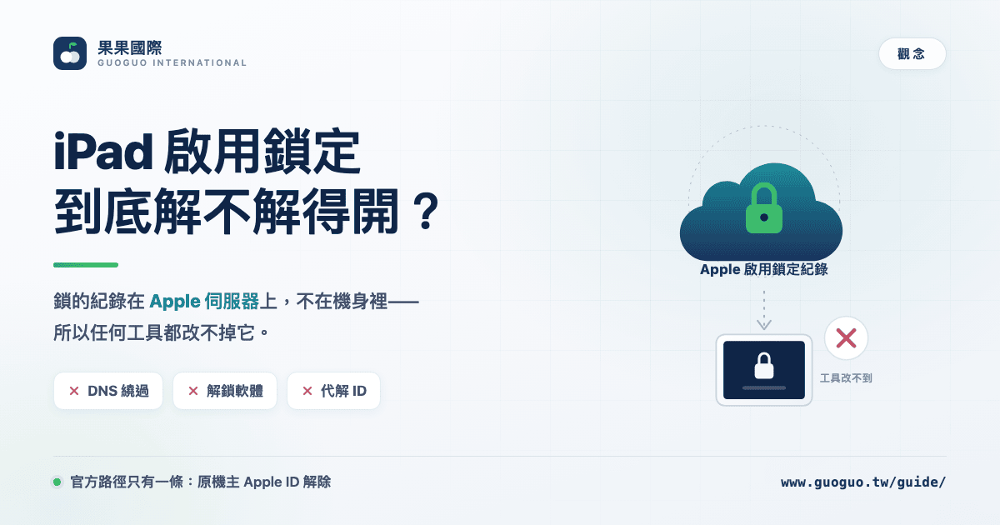
iPad 啟用鎖定，到底解不解得開？
答案是解不開——那把鎖在 Apple 伺服器上，不在機身裡，任何工具都改不掉。三類破解方法照做之後會拿到什麼，這裡全部攤開，再給官方唯一那條路。
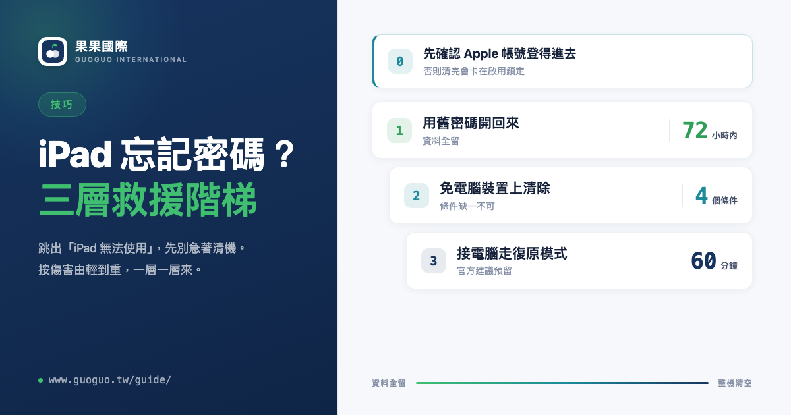
iPad 忘記螢幕鎖密碼？三層救援階梯
跳出「iPad 無法使用」先別急著清機。三層救援由輕到重，資料留不留得住差很多。動手前先確認 Apple 帳號登得進去，否則清完會卡在啟用鎖定。
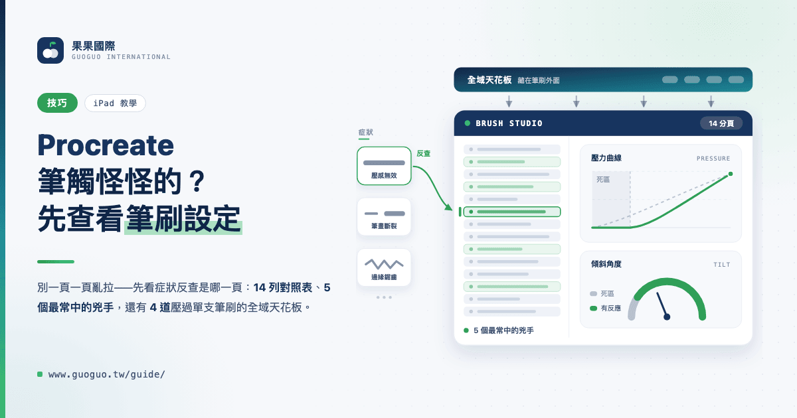
Procreate 筆觸怪怪的？先查看筆刷設定
14 個分頁別一頁一頁亂拉——先從症狀反查是哪一頁。附 14 列症狀對照表、五個最常中的兇手，以及會壓過單支筆刷的四道全域天花板。
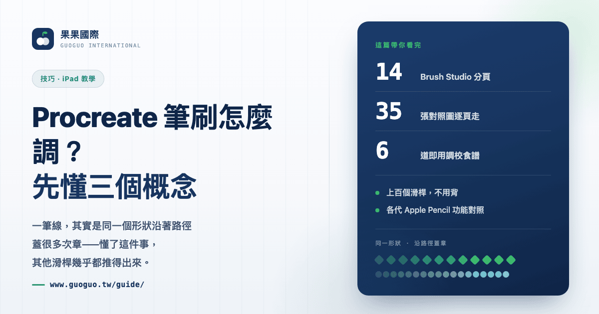
Procreate 筆刷怎麼調？先懂三個概念
上百個滑桿不用背——一筆線其實是同一個形狀沿路徑蓋很多次章，懂了這件事，其他滑桿幾乎都推得出來。35 張對照圖走完 14 頁，附六道食譜。
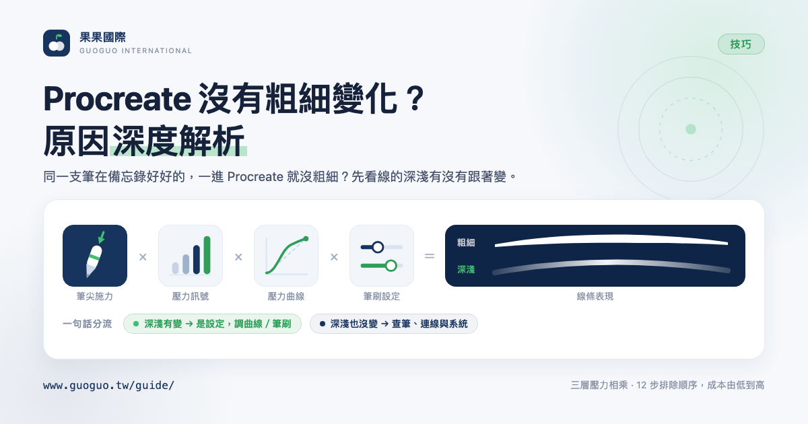
Procreate 沒有粗細變化？原因深度解析
同一支筆在備忘錄好好的，一進 Procreate 就畫不出粗細？先看線的深淺有沒有跟著變，一句話分開是筆還是設定。附成本由低到高的 12 步排除順序。
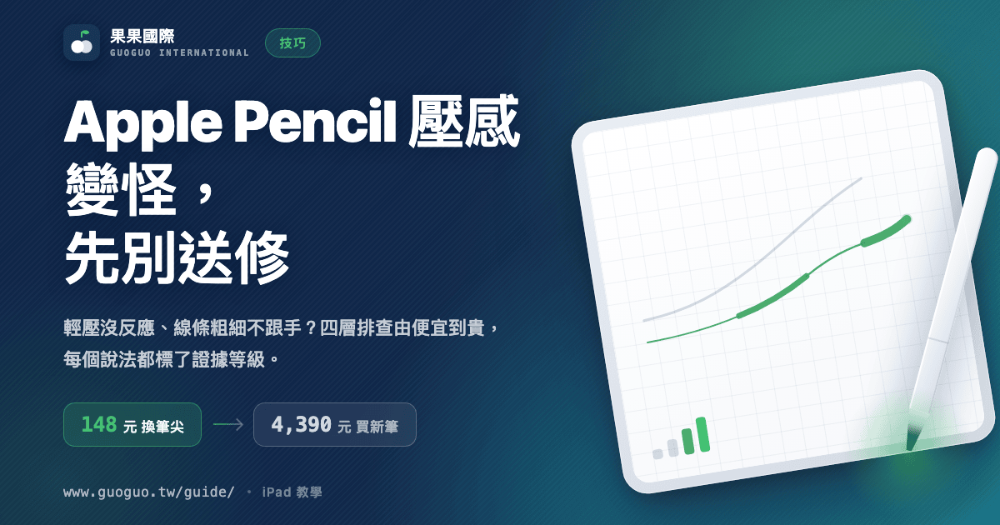
Apple Pencil 壓感變怪，先別送修
輕壓沒反應、粗細不跟手？先換一顆 148 元的筆尖，再考慮 4,390 元的新筆。五道關卡逐一拆開，排查由便宜到貴，每個說法都標了證據等級。
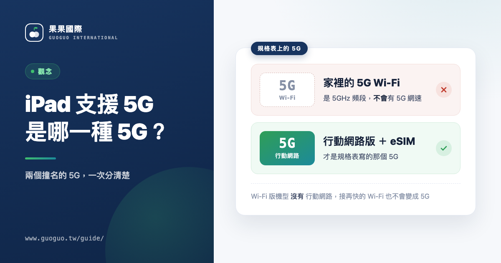
iPad 支援 5G 是哪一種 5G？
接家裡的 5G Wi-Fi 不會有 5G 網速。規格表上的 5G 只指行動網路，要行動網路版＋eSIM 才有——兩個撞名的 5G，一次分清楚。
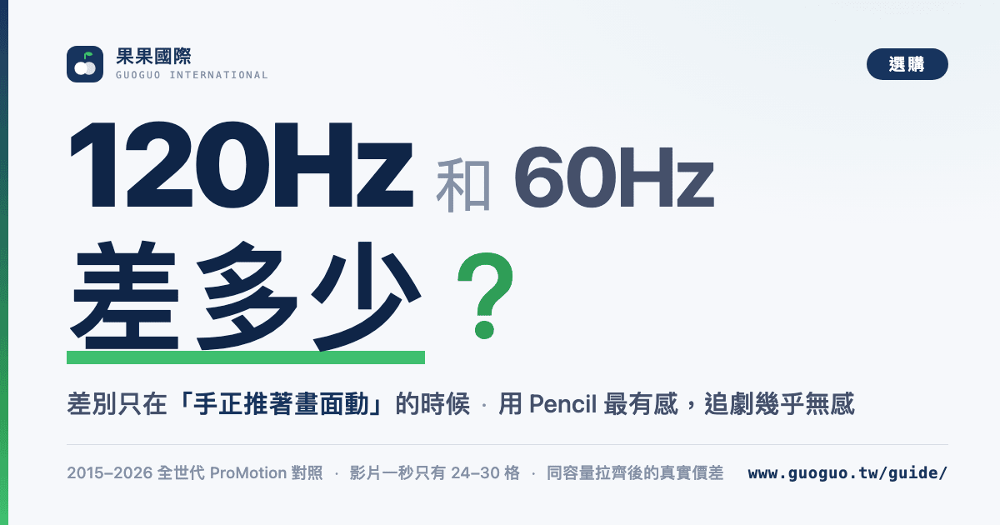
120Hz 和 60Hz 差多少？
差別只在「手正推著畫面動」時出現——用 Pencil 最有感，追劇幾乎無感，因為影片一秒只有 24 到 30 格。附全世代對照表與真實價差。
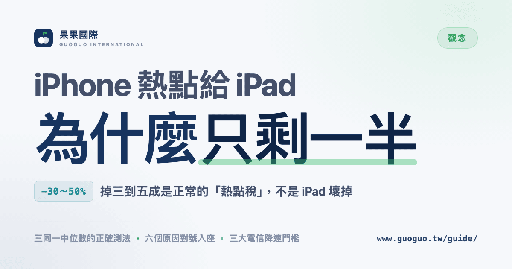
iPhone 熱點給 iPad 為什麼只剩一半
掉三到五成是正常的「熱點稅」，不是 iPad 壞掉。先教你三同一中位數的正確測法，再依落差幅度把六個原因對號入座——附三大電信官方降速門檻對照。
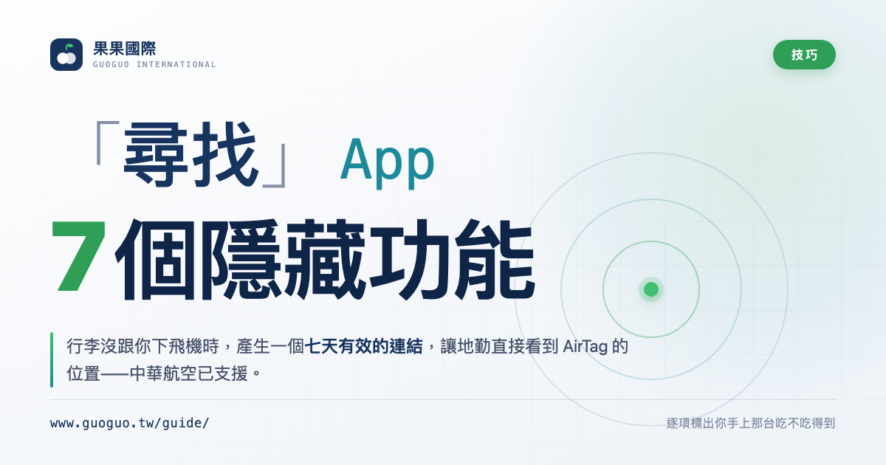
「尋找」App 的 7 個隱藏功能
行李沒跟你下飛機時，可以產生七天有效的連結讓地勤直接看到 AirTag 位置，中華航空已支援。七個沒人在用的「尋找」功能，逐項標出你那台吃不吃得到。
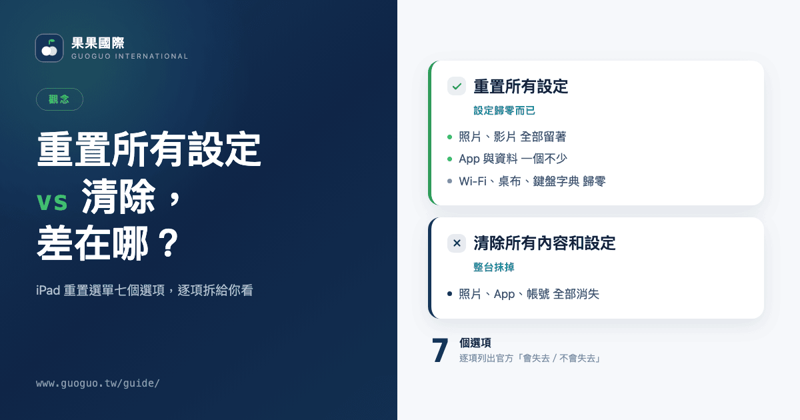
重置所有設定 vs 清除，差在哪？
「重置所有設定」只把設定歸零，照片和 App 一個都不會少；「清除所有內容和設定」才是整台抹掉。七個選項逐項拆開，告訴你現在該按哪一個。
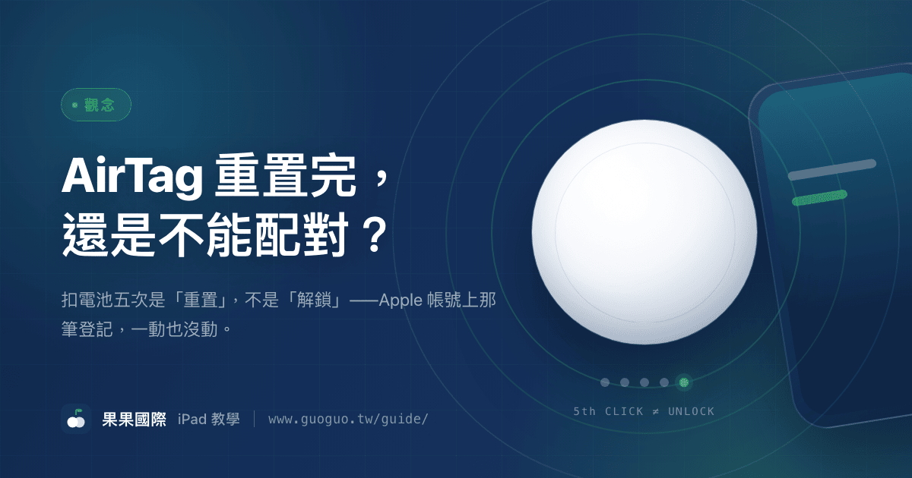
AirTag 重置完，還是不能配對？
扣電池五次是「重置」，不是「解鎖」。它只讓 AirTag 忘記上一次配對的對象，伺服器上那筆帳號登記一動也沒動。付錢前唯一有效的驗證動作在這裡。
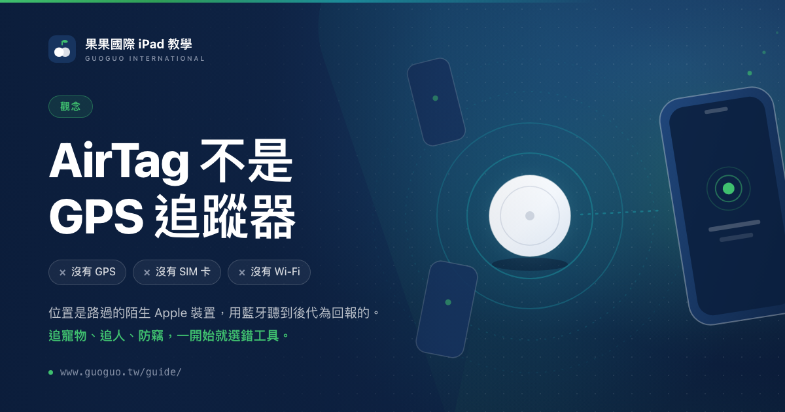
AirTag 不是 GPS 追蹤器
AirTag 沒有 GPS 也沒有 SIM 卡，位置是路過的陌生 Apple 裝置代為回報。懂了這件事，九種失效全部推得出來，也會懂追寵物是選錯工具。
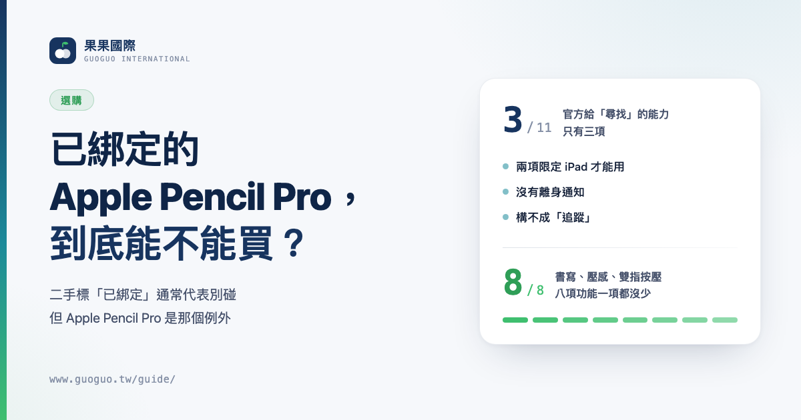
已綁定的 Apple Pencil Pro，到底能不能買？
二手標「已綁定」通常代表別碰，Apple Pencil Pro 是例外。它的「尋找」只有三項能力、沒有離身通知，構不成追蹤；八項功能一項沒少。
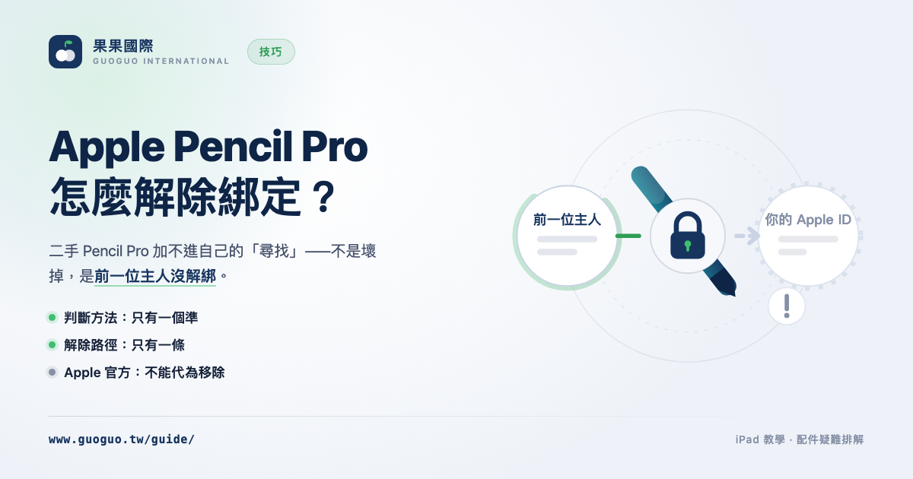
Apple Pencil Pro 怎麼解除綁定？
二手 Pencil Pro 加不進自己的「尋找」不是壞掉，是前一位主人沒解綁。判斷只有一個準確方法，解除也只有一條路——官方明說不能代為移除。
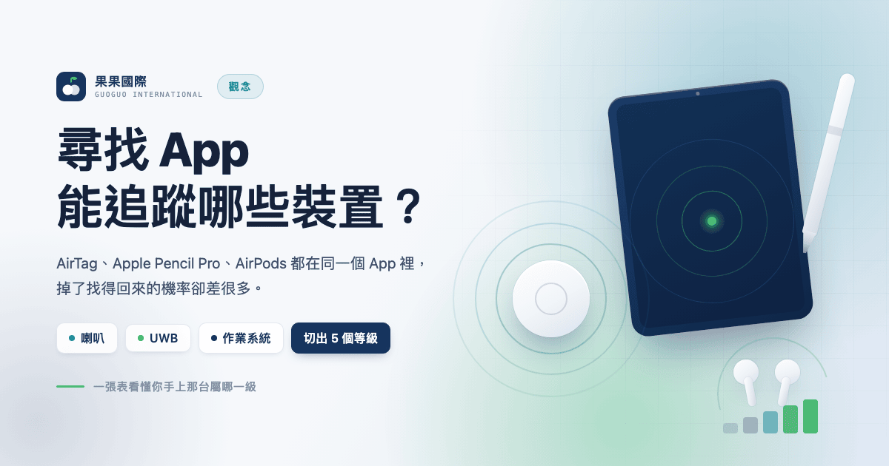
尋找 App 能追蹤哪些裝置？
都在同一個「尋找」App 裡，掉了找得回來的機率卻差很多。喇叭、UWB、作業系統三個硬體切出五個等級——一張表看懂你手上那台屬哪一級。
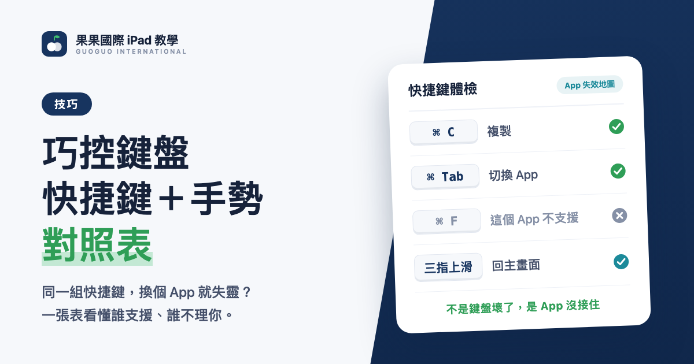
巧控鍵盤快捷鍵＋手勢對照表
按了沒反應，多半不是鍵盤壞了，是那個 App 不支援。系統級快捷鍵表、觸控板手勢表、App 失效地圖，外加 10 秒自我判斷法。
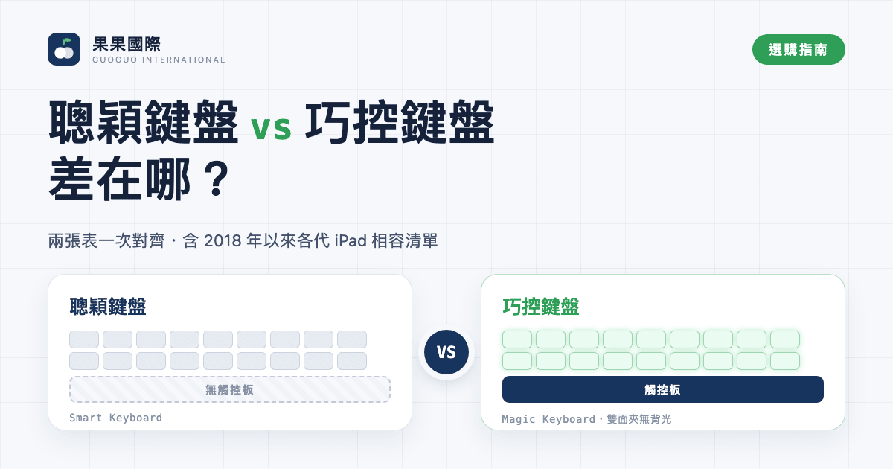
聰穎鍵盤 vs 巧控鍵盤，差在哪？
聰穎沒觸控板、巧控雙面夾沒背光——每款差在哪、你手上那台 iPad 配得上哪一款，兩張表一次對齊。含 2018 年以來各代相容清單。

iPad 越獄，一次搞懂
越獄是什麼、現在還做得到嗎、值不值得？以及——為什麼網路上八成的「一鍵越獄」是詐騙。看完不踩雷。

剪片要不要買 Apple Pencil？
先分清楚你要「剪片」還是「做動畫」——這兩條路對筆的需求剛好相反。剪片手指就很順、副廠就夠；做動畫筆才是核心工具，側轉派得上用場。

下載大陸區 App（剪映・抖音）
想裝大陸版剪映、抖音？先確認你需不需要切——八成人用 CapCut 就夠。真要切，一個帳號還是兩個帳號差很多，這篇兩個問題幫你決定。

iPad 巧控鍵盤上手指南
剛從 Windows 換過來？一個心法：把 Ctrl 換成 ⌘，八成快捷鍵你早就會了。10 分鐘從小白變熟手。